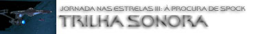
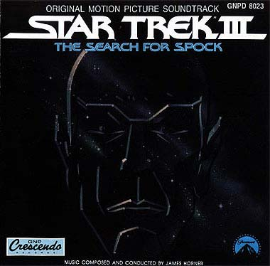
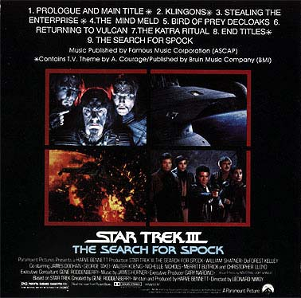

|

STAR TREK III:
THE SEARCH FOR SPOCK
1984


Sinopse
comentada
Comentrios
Citaes
Efeitos
Especiais
Trilha Sonora
Trivia
Ficha
Tcnica
O
DVD
A Morte Tornada
Chance
de Vida

"Jornada nas Estrelas III: Procura de Spock" andou em evidncia recentemente -- em plena poca de estria de
"Nmesis", foi exibido vrias vezes pelo canal pago Telecine Action, duas verses em DVD foram lanadas no Brasil em poucos meses (a original e a especial) e, ainda por cima, teve a duvidosa honra de ser "detonado" por um crtico gacho que escreve para um jornal paulista, em seu comentrio do DVD duplo. O fato que este nunca foi um dos
prediletos da srie, ficando em um razovel meio termo entre os que se
considera os melhores e aqueles que se considera os piores.
Por ser uma continuao direta de "A Ira de
Khan", houve uma flagrante inteno de corrigir pretensas falhas do captulo anterior (se naquele Kirk nunca confrontou pessoalmente Khan, nesse foi providenciado um confronto fsico entre o almirante e o vilo Klingon Kruge). Mas acima de tudo o filme, conceitualmente, foi produzido para trazer o capito Spock de volta do alm, e seu roteiro teria de arranjar solues satisfatrias para esta demanda. A partir de uma cena-chave do filme anterior, na qual Spock faz um rpido elo mental com o Dr. McCoy, o produtor-roteirista Harve Bennett criou um script que girava em torno da desativao da Enterprise original, da tentativa dos Klingons se apoderarem do torpedo Genesis (mais uma vez ele o alvo da cobia dos viles) e do misticismo Vulcano, tudo costurado a fim de tornar plausvel a ressurreio de Spock.

Apesar de no ter resultado to bom como poderia ser, o fato que este terceiro longa acabou sendo um marco para a mitologia de Jornada nas Estrelas, j que nele testemunhamos acontecimentos de importncia capital, como a primeira apario de uma ave de rapina Klingon, a morte do filho de Kirk, a destruio da Enterprise original e, claro, a volta de Spock ao mundo dos vivos e o seu reencontro com os amigos, na tocante cena final. No aspecto musical, os produtores no hesitaram em novamente contratar James Horner para compor a trilha, depois que sua msica para "A Ira de Khan" tornou-se produto de natureza antolgica.
Infelizmente, apesar de o compositor desta vez ter recebido um cach bem mais polpudo, a partitura para " Procura de Spock" resultou pouco mais do que medocre. Horner tentou apresentar uma msica mais elaborada para esta seqncia, e, apesar da orquestra soar melhor na maior parte do tempo, o todo no possui o frescor e a vitalidade do trabalho anterior. Se em alguns momentos " Procura de Spock" soa mais impressionante que "A Ira de Khan", h muitos outros que so, simplesmente, montonos.
O score "requentado" -- no houve a introduo de nenhum grande novo tema, e nem os apresentados no filme anterior foram significativamente alterados. A partir de "Prologue and Main Title" temos uma amostra do que vir, uma partitura cuja espinha dorsal o tema mstico composto para Spock no filme anterior. As longas e pretensamente majestosas verses desta composio, ouvidas principalmente na metade do lbum, quebram em muito o dinamismo do trabalho. J o tema Klingon introduzido por Horner em "Klingons" uma inferior variao do composto por Jerry Goldsmith, basicamente um conjunto superficial de metais e percusso sem o impacto de seu equivalente de "O Filme".
Mas certamente temos pontos positivos, e deles faz parte "Stealing The Enterprise", que de todas as faixas do score considero a nica capaz de rivalizar com a trilha de Horner para "A Ira de Khan" -- apesar de, obviamente, boa parte dela ser baseada em material pr-existente. nela que temos os momentos mais vibrantes da partitura, e felizmente a faixa ouvida durante o meu trecho preferido do filme. Iniciando com um tom otimista que marca a reunio dos protagonistas com vistas ao roubo da Enterprise da doca espacial, a faixa transita por momentos de suspense, pelo tema de Horner para a nave estelar e outros tantos nos quais a orquestra d o melhor de sua interpretao.
At mesmo o "Blaster-Beam", instrumento marcante da trilha de "O Filme" e utilizado timidamente por Horner em "A Ira de Khan", ouvido novamente mais ao seu final. Alm disso, na trilha sonora, Horner faz um melhor uso do tema de Alexander Courage criado para a Srie Clssica: dele ouvimos at mesmo um trecho inteiro, alm da conhecida fanfarra. Mas para resumir o que de fato , em linhas gerais, este trabalho, fao minhas as palavras de Fernando Penteriche sobre a trilha de " Procura de Spock": "essa trilha mais ou menos um refugo de 'Jornada II', tirando as batalhas navais e enchendo de misticismo Vulcano e um novo tema Klingon -- sem contar aquela verso new age do tema..." Belo poder de sntese, Fernando!

O LP original da trilha foi lanado pela gravadora Capitol em 1984, e o CD chegou em 1990 pela GNP Crescendo. Esta edio em CD ainda est em catlogo, e repete exatamente o contedo do LP original, contendo inclusive a desnecessria e datada verso pop do tema principal.